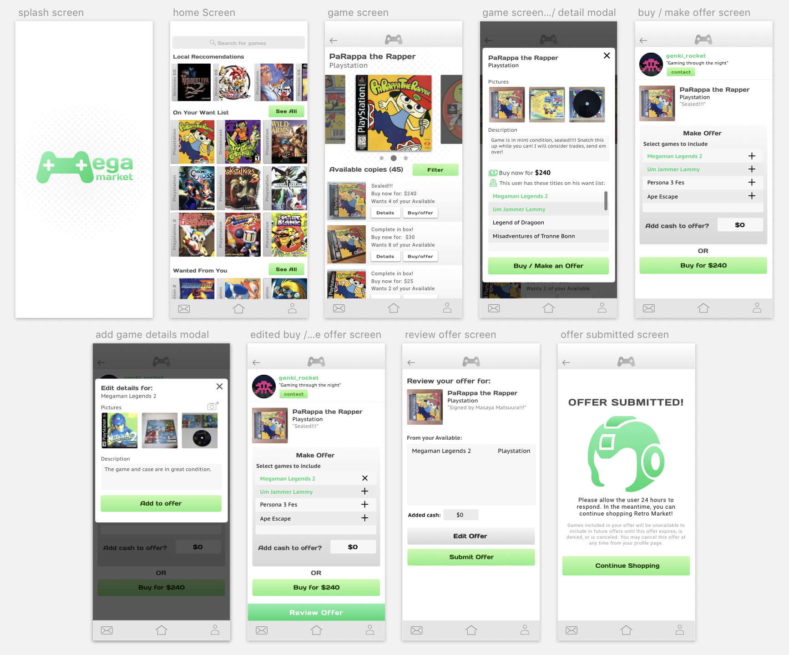

Mega Market is an app concept that aims to help retro game collectors in building their collections via purchases and trades with other hobbyists. Inspired by apps such as Letgo and Mercari, Mega Market aims to streamline the process of listing, finding, and obtaining games- with an emphasis on community interaction.
"Collecting is an experience best shared with other collectors"
Admittedly, Mega Market is a concept born from personal interest. I enjoy collecting and playing retro games but sometimes find myself wishing I had more people to talk about the games with. These days, a lot of game collecting is done through ebay. While convenient, it isn’t really too much fun to buy from a faceless ebayer. I wanted to make a specialized app for game collectors in which they can interact with other collectors through trades, purchases, or discussion about the hobby.
What I've designed for
I chose to first hone in on designing a user flow that represents the main functionality of the app. This is the flow of a user finding a game, constructing an offer for that game, and submitting that offer. In addition to designing this user flow, I also created cohesive visual design along with some branding to give the app distinct character.
Research and Planning
I began by looking at other retro video game collecting websites and apps. By looking at these sites and apps, I was able to nail down the important information points that I needed to include in the user flow. This would help me later in my design process as I would just have to figure out the best way to structure and present this information to the user. This research combined with my own personal knowledge as someone in the hobby helped to really place myself in the mindset of an intended user. Based on this research, I constructed a brief persona to help myself in keeping my intended user in mind through the design process.
Patrick, 33
Pat is a collector who is interested in adding games to his collection while trading off games that he doesn’t need/ has lost interest in. He is looking for a fun way to discover games and interact with other hobbyists.
I also referenced commerce apps such as Depop, Letgo, and Mercari for trending design patterns. I drew inspiration from these sources while envisioning how to mold certain design patterns to fit my app concept. The result of this step was this simple flowchart representing each step of the user flow. This would serve as a road map for the screens that I would be designing for in the next step.
The Paper Sketches

The design process begins by churning out quick sketches for possible screen layouts. I like to come up with at least 3 ideas/variations per screen and then decide on the design that best presents the necessary information in the most efficient way. I reason out each design decision in my mind to ensure that there is sound logic behind each choice.
Once I was satisfied with the basic screen designs, I laid out a flow of higher fidelity paper screens with notes to give more context. It is at this stage where I really solidify how I want the user to receive and interact with the information presented in the interface. I work out every detail of the flow and ensure that there is nothing conflicting within the design. An example of this was deciding if information about a seller’s copy of a game would best presented within a modal or as another screen entirely. If I am unable to reach a definite conclusion on a design decision such as this, I take note to test for it later in the design process.
Lo-Fi Wireframing & Usability Testing
The next step was to translate my paper sketches into low fidelity prototype screens. My goal at this stage is to make a prototype that a user would be able to interact with for usability testing. I made the screens with Sketch App and used Invision to make it interactive.
Once the prototype was complete, I did some testing. The way I tested my user flow was by giving some of my friends the task of finding a game, and making an offer for that game and then observing how they interacted with the interface while taking note of any hang ups and questions they ask. Some of my findings are listed below.
- User said text was too small to read comfortably
- User thought a piece of information was a button when actually wasn't
- User didn't know how to comprehend wording on certain headings
- User wanted more information about the game
With these pain points noted, I went back and made the necessary changes to the design. Once the revisions were made I decided that it was time to begin working on the visual design of the product.
Nailing Down a Visual Style

I wanted to give the app a look that was sleek but also fun to fit the theme of video games. I felt like a color scheme of lime green with greys combined with the “Days One” font face gave the app a nice techy feel that wasn’t overly serious. I chose some minmalist icons with distinct rounded edges to match the main font as well as the logo. Additionally, I created a mascot for the app for added fun and personality. After the art direciton was decided upon, I started applying the styles onto high fidelity prototype screens within Sketch.
The Final Product
 View clickable prototypeThese are the high fidelity screens of the user flow. You can click through the user flow using the highlighted hotspots on the Invision prototype linked above. The screens represent the flow of a user finding a game called "Parappa the Rapper", looking through available copies of that game, then constructing and submitting an offer to a user. This user flow is the result of all previous iterations, testing, and revisions.
For the Future...
I’m happy that through the design of this flow helped me in solidifying a proof of concept for the app. The big picture of the app includes more features such as collection archival, listing creation, member to member discussion, and more. These are all things that I would like to design solutions for. In doing so, I will be improving my design chops while making the concept even more solid for possible future development.